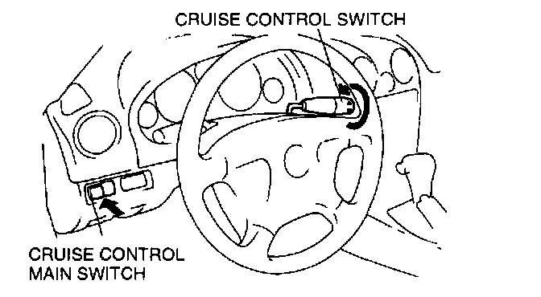

In Operation Mode
Inspection of Diagnostic Trouble Codes for Operation ModeNOTE:
- If an Operation Mode is not indicated, the following may be the cause of the malfunction.
1. Cruise control switch (RESUME/ACCEL switch)
2. Cruise control main switch
3. Cruise control module
4. Open or short circuit in wiring harness
Using the cruise set indicator light
1. Turn the ignition switch to ON.
2. Verify that the cruise control main switch is off.

3. Turn and hold the RESUME/ACCEL switch on then turn on the cruise control main switch to activate system inspection. (The cruise set indicator light will illuminate for 3 seconds.)
4. Operate each switch as described in the operation code list and note the operation code list pattern. If the cruise set indicator light does not flash, inspect the corresponding system area.
5. The operation mode is canceled by turning the ignition switch to LOCK or turning oft the cruise control main switch.